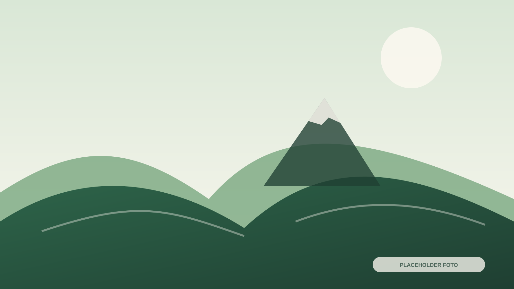
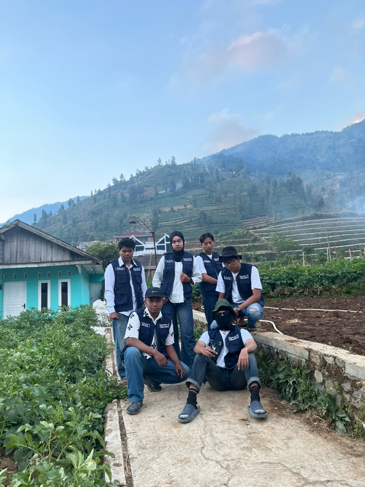
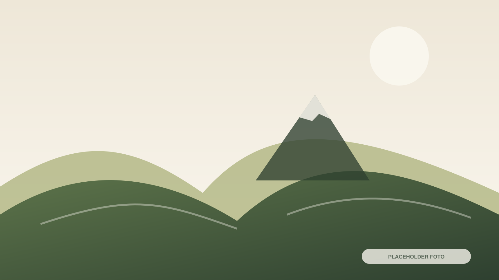
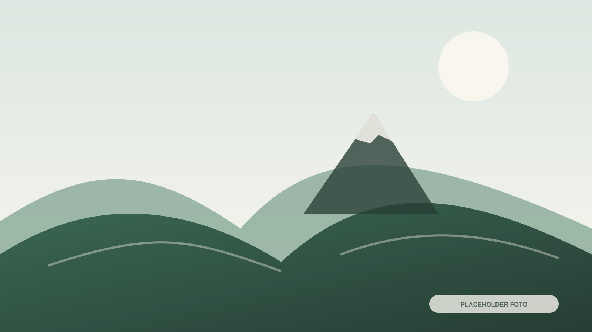
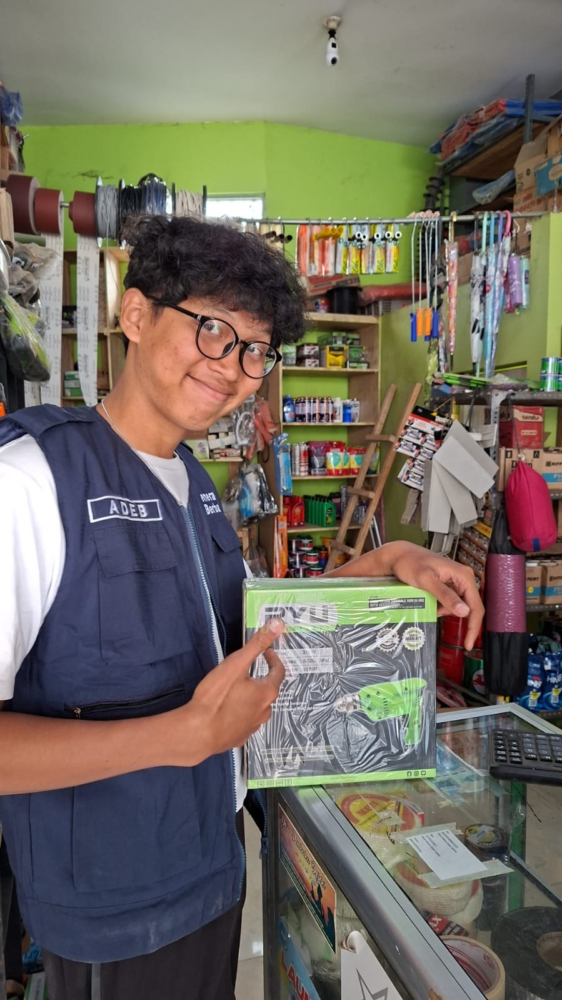

Desa Wisata Patakbanteng
Agrowisata Desa
Ruang untuk mengenal pertanian pegunungan, konservasi lingkungan, kegiatan masyarakat, dan kunjungan edukasi di Patakbanteng.
Agrowisata berbasis masyarakat
Belajar langsung dari lanskap dan kehidupan desa
Program dikembangkan sebagai pengantar kegiatan pertanian, konservasi, dan pendidikan.



Konservasi lingkungan
Menjaga ekosistem melalui tindakan nyata
Rumah Bibit dan program adopsi pohon menjadi bagian penguatan konservasi lingkungan berbasis masyarakat.
- Pembibitan tanaman khas pegunungan
- Penyediaan bibit pohon reboisasi
- Edukasi pelestarian lingkungan
- Program adopsi dan dokumentasi penanaman
Wisata edukasi
Struktur kegiatan yang dapat disesuaikan
Durasi, kapasitas, biaya, dan teknis aktivitas belum tersedia dan tidak diisi secara fiktif.
1
Pengenalan kawasan
Gambaran desa, pertanian, kondisi pegunungan, dan peran masyarakat.
2
Observasi kegiatan
Pengamatan proses pertanian, pembibitan, atau aktivitas yang sedang berlangsung.
3
Praktik dan refleksi
Kegiatan partisipatif mengikuti program dan arahan pengelola.
Kunjungan kelompok
Sekolah, komunitas, dan organisasi
Paket kunjungan dapat disusun berdasarkan tujuan, jumlah peserta, waktu, dan aktivitas yang dipilih.
Target Peserta
Sekolah, komunitas, organisasi, dan kelompok keluarga.
Jadwal & Durasi
Disesuaikan dengan program dan ketersediaan pengelola.
Data yang perlu disampaikan
- Nama instansi atau kelompok
- Perkiraan jumlah peserta
- Rentang usia peserta
- Tujuan kegiatan
- Tanggal dan durasi yang diinginkan
Susun kegiatan agrowisata Anda
Sampaikan jumlah peserta, tujuan kunjungan, dan waktu yang diinginkan kepada pengelola.